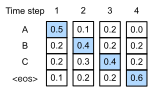
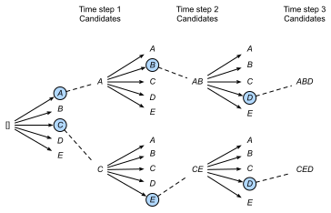

Recherche en faisceau
Dans la sec_seq2seq, nous avons
introduit l’architecture encodeur-décodeur et les techniques standards
pour les entraîner de bout en bout. Cependant, lorsqu’il s’est agi de la
prédiction au moment du test, nous n’avons mentionné que la stratégie
gloutonne (greedy), où nous sélectionnons à chaque pas
de temps le jeton ayant la plus haute probabilité prédite d’apparaître
ensuite, jusqu’à ce que, à un certain pas de temps, nous prédisions le
jeton spécial de fin de séquence «
Commençons par établir notre notation mathématique, en empruntant les
conventions de la sec_seq2seq. À n’importe quel pas de temps \(t'\), le décodeur produit des
prédictions représentant la probabilité de chaque jeton du vocabulaire
apparaissant ensuite dans la séquence (la valeur probable de \(y_{t'+1}\)), conditionnée par les
jetons précédents \(y_1, \ldots,
y_{t'}\) et la variable de contexte \(\mathbf{c}\), produite par l’encodeur pour
représenter la séquence d’entrée. Pour quantifier le coût de calcul,
notons \(\mathcal{Y}\) le vocabulaire
de sortie (incluant le jeton spécial de fin de séquence «
Recherche gloutonne
Considérons la stratégie simple de recherche gloutonne de la sec_seq2seq. Ici, à n’importe quel pas de temps \(t'\), nous sélectionnons simplement le jeton ayant la probabilité conditionnelle la plus élevée dans \(\mathcal{Y}\), c’est-à-dire,
\[y_{t'} = \operatorname*{argmax}_{y \in \mathcal{Y}} P(y \mid y_1, \ldots, y_{t'-1}, \mathbf{c}).\]
Une fois que notre modèle produit «
Cette stratégie peut sembler raisonnable, et en fait, elle n’est pas si mauvaise ! Compte tenu de sa faible exigence en termes de calcul, il serait difficile d’obtenir un meilleur rapport performance-coût. Cependant, si nous laissons de côté l’efficacité un instant, il pourrait sembler plus raisonnable de rechercher la séquence la plus probable, et non la séquence de jetons les plus probables (sélectionnés de manière gloutonne). Il s’avère que ces deux objets peuvent être assez différents. La séquence la plus probable est celle qui maximise l’expression \(\prod_{t'=1}^{T'} P(y_{t'} \mid y_1, \ldots, y_{t'-1}, \mathbf{c})\). Dans notre exemple de traduction automatique, si le décodeur récupérait véritablement les probabilités du processus génératif sous-jacent, cela nous donnerait la traduction la plus probable. Malheureusement, il n’y a aucune garantie que la recherche gloutonne nous donne cette séquence.
Illustrons cela avec un exemple. Supposons qu’il y ait quatre jetons
« A », « B », « C » et «

À chaque pas de temps, la recherche gloutonne sélectionne le jeton ayant la probabilité conditionnelle la plus élevée. Par conséquent, la séquence de sortie « A », « B », « C » et «Ensuite, regardons un autre exemple dans la fig_s2s-prob2. Contrairement à la fig_s2s-prob1, au pas de temps 2, nous sélectionnons le jeton « C », qui a la deuxième probabilité conditionnelle la plus élevée.
 Étant donné que les sous-séquences de sortie
aux pas de temps 1 et 2, sur lesquelles le pas de temps 3 est basé, ont
changé de « A » et « B » dans la fig_s2s-prob1 en « A » et « C » dans la
fig_s2s-prob2, la probabilité conditionnelle de chaque jeton au pas de
temps 3 a également changé dans la fig_s2s-prob2. Supposons que nous
choisissions le jeton « B » au pas de temps 3. Maintenant, le pas de
temps 4 est conditionné par la sous-séquence de sortie aux trois
premiers pas de temps « A », « C » et « B », qui a changé par rapport à
« A », « B » et « C » dans la fig_s2s-prob1. Par conséquent, la
probabilité conditionnelle de générer chaque jeton au pas de temps 4
dans la fig_s2s-prob2 est également différente de celle de la
fig_s2s-prob1. En conséquence, la probabilité conditionnelle de la
séquence de sortie « A », « C », « B » et «
Étant donné que les sous-séquences de sortie
aux pas de temps 1 et 2, sur lesquelles le pas de temps 3 est basé, ont
changé de « A » et « B » dans la fig_s2s-prob1 en « A » et « C » dans la
fig_s2s-prob2, la probabilité conditionnelle de chaque jeton au pas de
temps 3 a également changé dans la fig_s2s-prob2. Supposons que nous
choisissions le jeton « B » au pas de temps 3. Maintenant, le pas de
temps 4 est conditionné par la sous-séquence de sortie aux trois
premiers pas de temps « A », « C » et « B », qui a changé par rapport à
« A », « B » et « C » dans la fig_s2s-prob1. Par conséquent, la
probabilité conditionnelle de générer chaque jeton au pas de temps 4
dans la fig_s2s-prob2 est également différente de celle de la
fig_s2s-prob1. En conséquence, la probabilité conditionnelle de la
séquence de sortie « A », « C », « B » et «
Recherche exhaustive
Si l’objectif est d’obtenir la séquence la plus probable, nous pouvons envisager d’utiliser la recherche exhaustive : énumérer toutes les séquences de sortie possibles avec leurs probabilités conditionnelles, puis produire celle qui obtient la probabilité prédite la plus élevée.
Bien que cela nous donne certainement ce que nous désirons, cela se ferait à un coût de calcul prohibitif de \(\mathcal{O}(\left|\mathcal{Y}\right|^{T'})\), exponentiel par rapport à la longueur de la séquence et avec une base énorme donnée par la taille du vocabulaire. Par exemple, quand \(|\mathcal{Y}|=10000\) et \(T'=10\), deux petits nombres comparés à ceux des applications réelles, nous devrons évaluer \(10000^{10} = 10^{40}\) séquences, ce qui dépasse déjà les capacités de tout ordinateur prévisible. D’autre part, le coût de calcul de la recherche gloutonne est \(\mathcal{O}(\left|\mathcal{Y}\right|T')\) : miraculeusement bon marché mais loin d’être optimal. Par exemple, quand \(|\mathcal{Y}|=10000\) et \(T'=10\), nous n’avons besoin d’évaluer que \(10000 \times 10 = 10^5\) séquences.
Recherche en faisceau
Vous pourriez considérer les stratégies de décodage de séquences comme se situant sur un spectre, la recherche en faisceau (beam search) constituant un compromis entre l’efficacité de la recherche gloutonne et l’optimalité de la recherche exhaustive. La version la plus directe de la recherche en faisceau est caractérisée par un seul hyperparamètre, la taille du faisceau (beam size), \(k\). Expliquons cette terminologie. Au pas de temps 1, nous sélectionnons les \(k\) jetons ayant les probabilités prédites les plus élevées. Chacun d’eux sera le premier jeton de \(k\) séquences de sortie candidates, respectivement. À chaque pas de temps suivant, sur la base des \(k\) séquences de sortie candidates au pas de temps précédent, nous continuons à sélectionner \(k\) séquences de sortie candidates ayant les probabilités prédites les plus élevées parmi les \(k\left|\mathcal{Y}\right|\) choix possibles.

La fig_beam-search démontre le processus de recherche en faisceau avec un exemple. Supposons que le vocabulaire de sortie ne contienne que cinq éléments : \(\mathcal{Y} = \{A, B, C, D, E\}\), où l’un d’entre eux est «\[\begin{aligned}P(A, y_2 \mid \mathbf{c}) = P(A \mid \mathbf{c})P(y_2 \mid A, \mathbf{c}),\\ P(C, y_2 \mid \mathbf{c}) = P(C \mid \mathbf{c})P(y_2 \mid C, \mathbf{c}),\end{aligned}\]
et choisissons les deux plus grandes parmi ces dix valeurs, disons \(P(A, B \mid \mathbf{c})\) et \(P(C, E \mid \mathbf{c})\). Puis au pas de temps 3, pour tout \(y_3 \in \mathcal{Y}\), nous calculons
\[\begin{aligned}P(A, B, y_3 \mid \mathbf{c}) = P(A, B \mid \mathbf{c})P(y_3 \mid A, B, \mathbf{c}),\\P(C, E, y_3 \mid \mathbf{c}) = P(C, E \mid \mathbf{c})P(y_3 \mid C, E, \mathbf{c}),\end{aligned}\]
et choisissons les deux plus grandes parmi ces dix valeurs, disons \(P(A, B, D \mid \mathbf{c})\) et \(P(C, E, D \mid \mathbf{c})\). En conséquence, nous obtenons six séquences de sortie candidates : (i) \(A\) ; (ii) \(C\) ; (iii) \(A\), \(B\) ; (iv) \(C\), \(E\) ; (v) \(A\), \(B\), \(D\) ; et (vi) \(C\), \(E\), \(D\).
À la fin, nous obtenons l’ensemble des séquences de sortie candidates
finales basé sur ces six séquences (par exemple, en supprimant les
parties incluant et après «
\[ \frac{1}{L^\alpha} \log P(y_1, \ldots, y_{L}\mid \mathbf{c}) = \frac{1}{L^\alpha} \sum_{t'=1}^L \log P(y_{t'} \mid y_1, \ldots, y_{t'-1}, \mathbf{c});\]
Ici, \(L\) est la longueur de la séquence candidate finale et \(\alpha\) est généralement fixé à 0,75. Puisqu’une séquence plus longue a plus de termes logarithmiques dans la somme de l’ eq_beam-search-score, le terme \(L^\alpha\) au dénominateur pénalise les séquences longues.
Le coût de calcul de la recherche en faisceau est \(\mathcal{O}(k\left|\mathcal{Y}\right|T')\). Ce résultat se situe entre celui de la recherche gloutonne et celui de la recherche exhaustive. La recherche gloutonne peut être traitée comme un cas particulier de recherche en faisceau survenant lorsque la taille du faisceau est fixée à 1.
Résumé
Les stratégies de recherche de séquence incluent la recherche gloutonne, la recherche exhaustive et la recherche en faisceau. La recherche en faisceau offre un compromis entre précision et coût de calcul via le choix flexible de la taille du faisceau.
Exercices
- Pouvons-nous traiter la recherche exhaustive comme un type spécial de recherche en faisceau ? Pourquoi ou pourquoi pas ?
- Appliquez la recherche en faisceau au problème de traduction automatique de la sec_seq2seq. Comment la taille du faisceau affecte-t-elle les résultats de la traduction et la vitesse de prédiction ?
- Nous avons utilisé la modélisation du langage pour générer du texte suivant des préfixes fournis par l’utilisateur dans la sec_rnn-scratch. Quel genre de stratégie de recherche utilise-t-elle ? Pouvez-vous l’améliorer ?